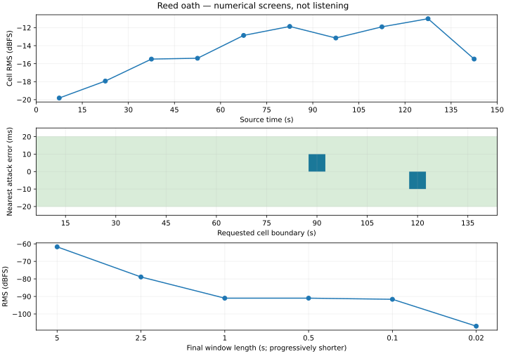
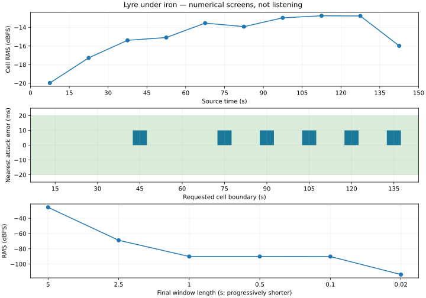

Mage Arena · Audio · Round 4
AU3 · full arena scores
Two complete scores from the kept arena directions. Generation facts and measured engineering evidence are separate from owner taste and musical approval.
9,000of 10,000 job credits
1,689last observed account balance
30 / sconservative / observed shared cost
300 scomplete normalized scores
Balance observed 2026-10-04T09:28:10.042Z. Floor 1,000. Reset 2026-10-04T19:31:41.000Z. Eight-second serialized pacing; no automatic paid retries. All AU3 provider requests succeeded; no 429 or quota error.
Hide and iron deferred. A 150 s take needs about 4,500 credits; the authorized 90 s fallback needs about 2,700. After C and D, only 1,000 job credits remain, and the last balance leaves 689 above the floor. Neither cut fits. A reset does not renew the job cap. No retry, A, camp, Google or round-3 generation was purchased.
Cost and loudness
| Track | Requested / raw seconds | Credits | Immediate / settled delta | Raw LUFS / dBTP | Master LUFS / dBTP |
|---|---|---|---|---|---|
| Reed oath | 150 / 150.047347 | 4500 | 4500 / 4500 | -13.59 / -1.0 | -25.99 / -13.41 |
| Lyre under iron | 150 / 150.047347 | 4500 | 4500 / 4500 | -14.19 / -0.94 | -26.0 / -12.75 |
Reed oath
Kept audition reference and untouched full raw
Owner-kept short reference (matched down toward −26 LUFS)
Untouched full raw (review attenuation)
Technical delivery; owner listening pending. No new owner choice has been assigned. Linear files are available; adaptive scheduling, sustain and sting approval remain disabled.
Requested six phases at 0/15/45/75/105/135 s. The generator returned 150.047347 s; the working master is 150.000 s. The derivative trims 47.35 ms of near-silent overrun. Raw audio is untouched.
Grid: strongest interpolated onset periodicity 96.021 BPM versus requested 96; 9/9 internal cell boundaries have a detected attack within 20 ms. This estimator can follow subdivisions. First true downbeat, six-bar phrase completion and cumulative beat drift are not verified. No time warp was applied, and the manifest does not claim a verified BPM.
Long form: no aligned identical 15 s block was detected (maximum waveform correlation 0.0597; 5 s screen 0.3015). These screens cannot exclude shifted reuse or establish melodic development. The timed sections and changing cell energy are measurable; instrument leadership, memorable identity and the six-part emotional arc require listening. The exact audition melody was not transcribed or audio-conditioned.
Ending and vocals: final 2.5 s RMS -78.889 dBFS; final 20 ms -106.951 dBFS. A decaying ending is present numerically; a real harmonic release versus an early fade is unverified. No lyrics were supplied, but absence of accidental vocals has not been certified. This environment did not perform an auditory review.
Mastering: -25.99 LUFS / -13.41 dBTP; 0 full-scale samples. 48 kHz PCM decoded from a lossy MP3, not a native lossless master. Section edits and stings inherit the score’s working gain; they are not independently boosted to full-mix loudness.
Sustain: three-repeat numerical seam passes; adjacent 0.5 s level difference 0.699 dB. It is an interior 15 s hold edit, separate from the loop-free full score. Harmonic/rhythmic seam and all tier transitions await listening. The 5 s sting joins a release fragment and source decay; thematic recognition and the join await review.
Written take / retry decision · Measurements and analysis · Paid-call sidecar

Section map and players
| Section | Seconds | Cells (zero-based) | Arrangement tiers |
|---|---|---|---|
| Entrance | 0–15 | 0 | 1 |
| Theme statement | 15–45 | 1, 2 | 2, 3 |
| Development | 45–75 | 3, 4 | 4, 4 |
| Tension | 75–105 | 5, 6 | 3, 4 |
| Climax | 105–135 | 7, 8 | 4, 4 |
| Release | 135–150 | 9 | release |
Section names describe the authored request. Later thin sections do not downgrade the gameplay tier. The segment index supplies ten 15 s cells; approved transitions remain empty until musical checks pass.
Reed oath · Entrance
Entrance
Reed oath · Theme statement
Theme statement
Reed oath · Development
Development
Reed oath · Tension
Tension
Reed oath · Climax
Climax
Reed oath · Release
Release
Wave-end and extended-fight candidates
Reed oath · 5 s release-fragment sting
5 s release-fragment sting
Reed oath · 15 s interior sustain loop
15 s interior sustain loop
Lyre under iron
Kept audition reference and untouched full raw
Owner-kept short reference (matched down toward −26 LUFS)
Untouched full raw (review attenuation)
Lyre under iron · full score
Complete 150 s score · −26 LUFS working copy
Technical delivery; owner listening pending. No new owner choice has been assigned. Linear files are available; adaptive scheduling, sustain and sting approval remain disabled.
Requested six phases at 0/15/45/75/105/135 s. The generator returned 150.047347 s; the working master is 150.000 s. The derivative trims 47.35 ms of near-silent overrun. Raw audio is untouched.
Grid: strongest interpolated onset periodicity 95.999 BPM versus requested 96; 9/9 internal cell boundaries have a detected attack within 20 ms. This estimator can follow subdivisions. First true downbeat, six-bar phrase completion and cumulative beat drift are not verified. No time warp was applied, and the manifest does not claim a verified BPM.
Long form: no aligned identical 15 s block was detected (maximum waveform correlation 0.0765; 5 s screen 0.3053). These screens cannot exclude shifted reuse or establish melodic development. The timed sections and changing cell energy are measurable; instrument leadership, memorable identity and the six-part emotional arc require listening. The exact audition melody was not transcribed or audio-conditioned.
Ending and vocals: final 2.5 s RMS -68.859 dBFS; final 20 ms -113.666 dBFS. A decaying ending is present numerically; a real harmonic release versus an early fade is unverified. No lyrics were supplied, but absence of accidental vocals has not been certified. This environment did not perform an auditory review.
Mastering: -26.00 LUFS / -12.75 dBTP; 0 full-scale samples. 48 kHz PCM decoded from a lossy MP3, not a native lossless master. Section edits and stings inherit the score’s working gain; they are not independently boosted to full-mix loudness.
Sustain: three-repeat numerical seam passes; adjacent 0.5 s level difference 2.003 dB. It is an interior 15 s hold edit, separate from the loop-free full score. Harmonic/rhythmic seam and all tier transitions await listening. The 5 s sting joins a release fragment and source decay; thematic recognition and the join await review.
Written take / retry decision · Measurements and analysis · Paid-call sidecar

Section map and players
| Section | Seconds | Cells (zero-based) | Arrangement tiers |
|---|---|---|---|
| Entrance | 0–15 | 0 | 1 |
| Theme statement | 15–45 | 1, 2 | 2, 3 |
| Development | 45–75 | 3, 4 | 4, 4 |
| Tension | 75–105 | 5, 6 | 3, 4 |
| Climax | 105–135 | 7, 8 | 4, 4 |
| Release | 135–150 | 9 | release |
Section names describe the authored request. Later thin sections do not downgrade the gameplay tier. The segment index supplies ten 15 s cells; approved transitions remain empty until musical checks pass.
Lyre under iron · Entrance
Entrance
Lyre under iron · Theme statement
Theme statement
Lyre under iron · Development
Development
Lyre under iron · Tension
Tension
Lyre under iron · Climax
Climax
Lyre under iron · Release
Release
Wave-end and extended-fight candidates
Lyre under iron · 5 s release-fragment sting
5 s release-fragment sting
Lyre under iron · 15 s interior sustain loop
15 s interior sustain loop
Export owner notes
Choices start blank and are saved only in this browser’s round-4 storage. They do not update CHOICES.md automatically.